Monitora le tue macchine CNC
in tempo reale.
RTIndustry collega CNC e PLC alla rete dell'officina: conta i pezzi, misura tempi e consumi, calcola l'OEE e organizza i work order. Un unico servizio Windows, da usare nel browser su PC, tablet e telefono.
Richiedi una demo Scopri come funziona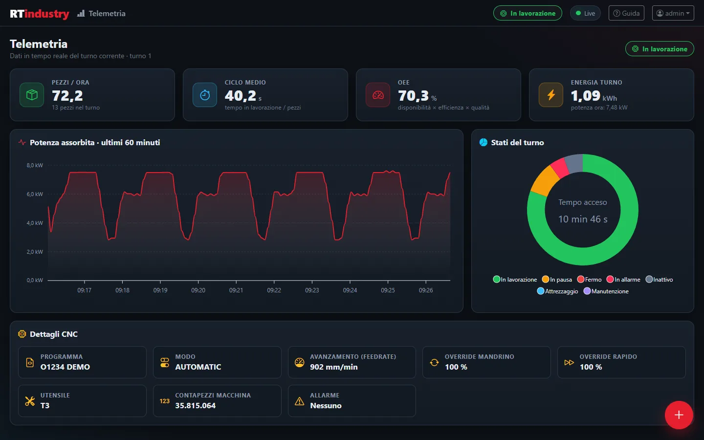
Le tue macchine producono dati.
Ma li stai usando?
Molte officine lavorano ancora senza sapere davvero quanto producono le macchine, quanto restano ferme e perché.
Zero visibilità
Non sai se la macchina sta lavorando, è in allarme o è ferma finché qualcuno non va a controllare.
Dati su carta
Pezzi, scarti e tempi si scrivono a mano: i dati arrivano tardi, incompleti o sbagliati.
OEE sconosciuto
Senza dati affidabili non puoi misurare l'efficienza reale: le decisioni si basano su sensazioni, non su numeri.
RTIndustry 2.0
Un programma solo, installato su un PC dell'officina: raccoglie i dati dalla macchina anche a browser chiuso e li mostra a chi serve, dall'operatore al responsabile di produzione.
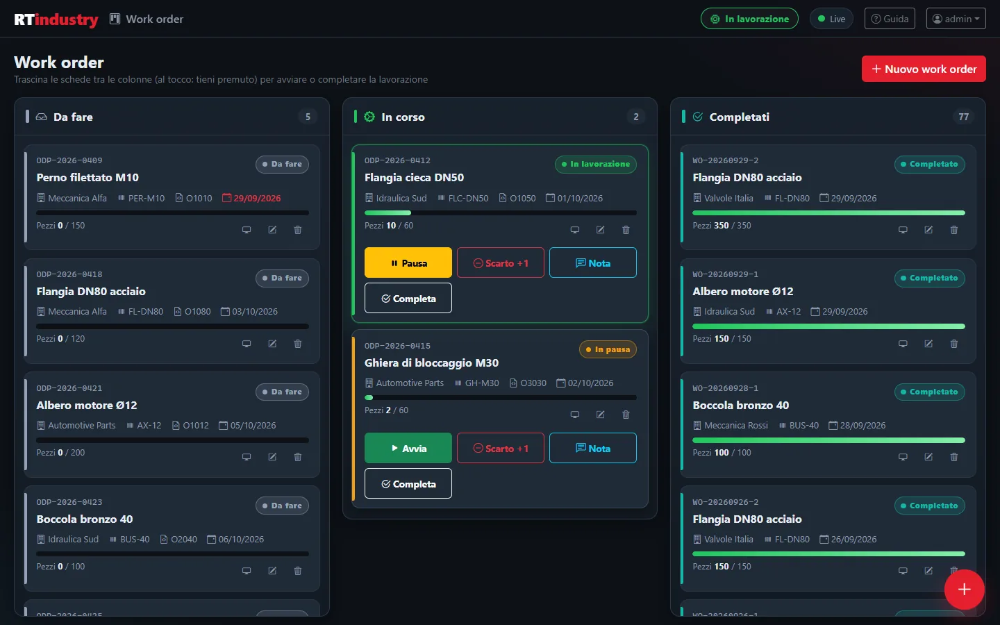
Le commesse su una bacheca Kanban
Ogni work order dice cosa produrre e quanti pezzi. Si trascina da una colonna all'altra per avviarlo, metterlo in pausa o completarlo, anche con il dito su un tablet.
- Colonne Da fare, In corso e Completati
- Pezzi, cliente, articolo, programma e data di consegna (in rosso se scaduta)
- Un solo work order alla volta in lavorazione: i pezzi vanno sempre alla commessa giusta
- Se la macchina parte senza commessa, RTIndustry ne crea una automatica e non perde i pezzi
- Pulsanti rapidi: Pausa/Avvia, Scarto +1, Nota, Completa
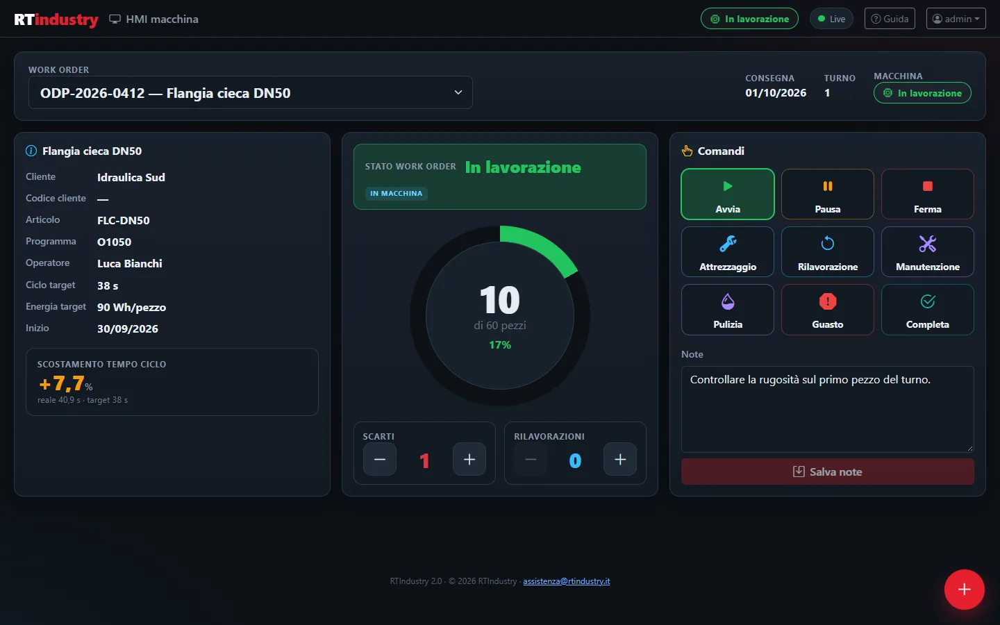
La schermata dell'operatore a bordo macchina
Grande, leggibile e pensata per il touch: l'operatore vede a colpo d'occhio a che punto è la commessa e registra scarti, fermate e note senza carta.
- Anello di avanzamento: pezzi buoni rispetto ai pezzi richiesti
- Scostamento del tempo ciclo dal tempo target (più lento in rosso, più veloce in verde)
- Scarti e rilavorazioni con + e −
- Stati: Avvia, Pausa, Ferma, Attrezzaggio, Rilavorazione, Manutenzione, Pulizia, Guasto, Completa
- Allarme attivo in evidenza e note per il turno successivo
Il turno in corso, aggiornato ogni secondo
Come sta andando adesso la macchina: ritmo di produzione, tempo ciclo, efficienza e consumi, con i dettagli letti dal controllo numerico.
- Pezzi all'ora, ciclo medio, OEE ed energia del turno
- Grafico della potenza assorbita nell'ultima ora
- Ripartizione dei tempi del turno per stato
- Dettagli CNC: programma, avanzamento, override, utensile
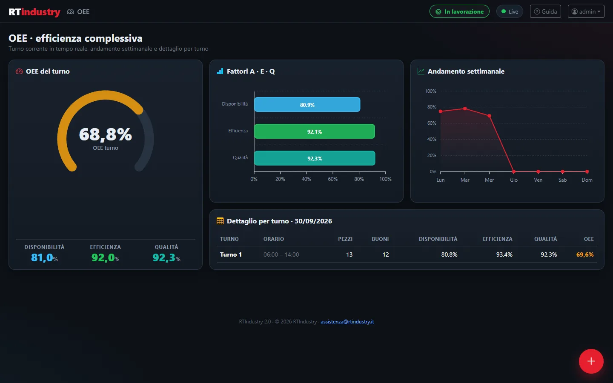
OEE calcolato da solo, turno per turno
L'OEE (Overall Equipment Effectiveness, efficienza complessiva della macchina) è il prodotto di tre fattori. RTIndustry li calcola dai dati della macchina, senza inserimenti manuali.
- Disponibilità: per quanto tempo del turno la macchina ha lavorato
- Efficienza: se ha lavorato alla velocità prevista dal tempo target
- Qualità: quanti pezzi sono buoni
- Andamento settimanale e dettaglio per turno della giornata
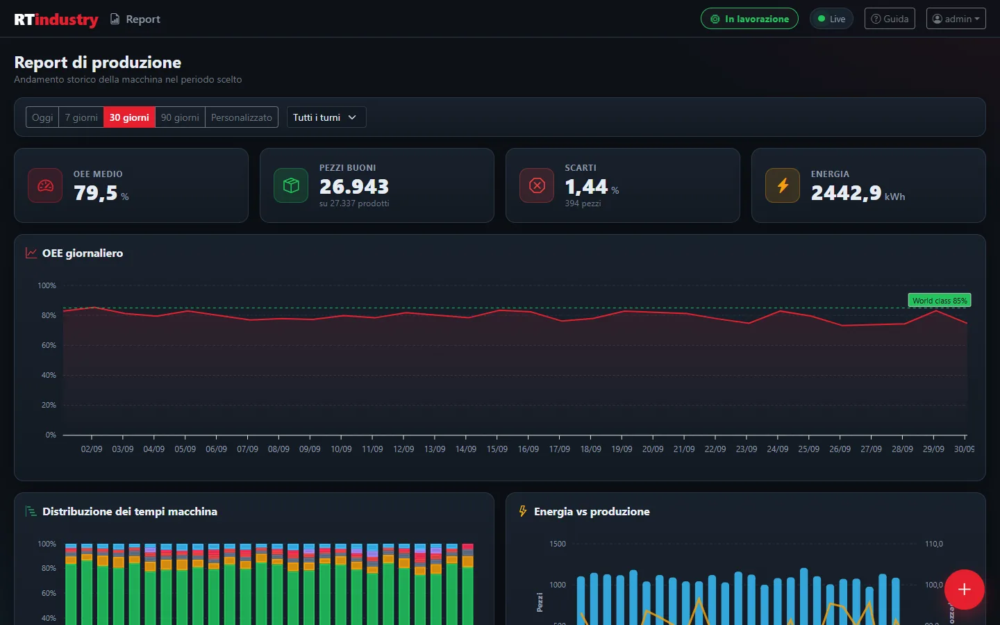
L'analisi di una settimana, di un mese, di un turno
Scegli periodo e turno e hai i numeri pronti per la riunione di produzione, da esportare in Excel.
- Riepiloghi: OEE medio, pezzi buoni, scarti, energia
- OEE giorno per giorno e distribuzione dei tempi macchina
- Energia rispetto alla produzione
- Elenco dei work order completati ed esportazione CSV
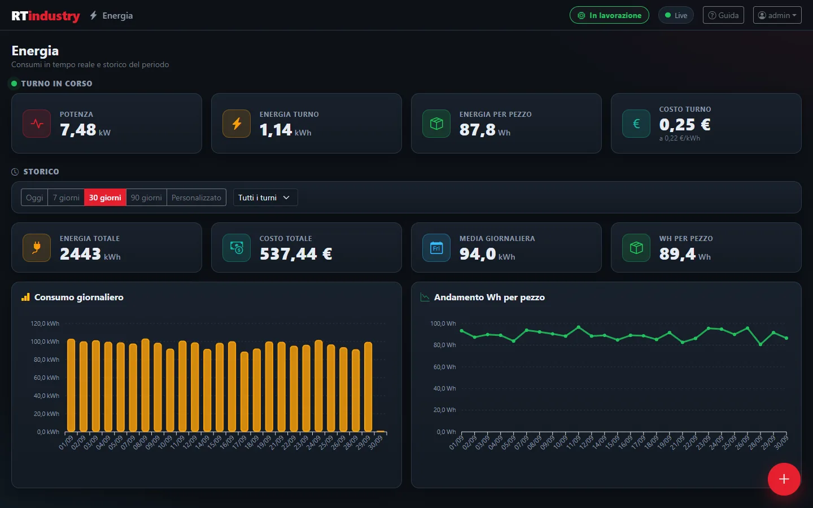
Quanto consuma la macchina, quanto costa ogni pezzo
Con un contatore di energia collegato (anche Modbus, separato dalla macchina) RTIndustry misura i consumi e li lega alla produzione.
- In tempo reale: potenza, energia del turno, Wh per pezzo e costo del turno
- Storico: energia e costo totali, media e consumo giorno per giorno
- Andamento dei Wh per pezzo
- Prezzo dell'energia (euro al kWh) impostabile
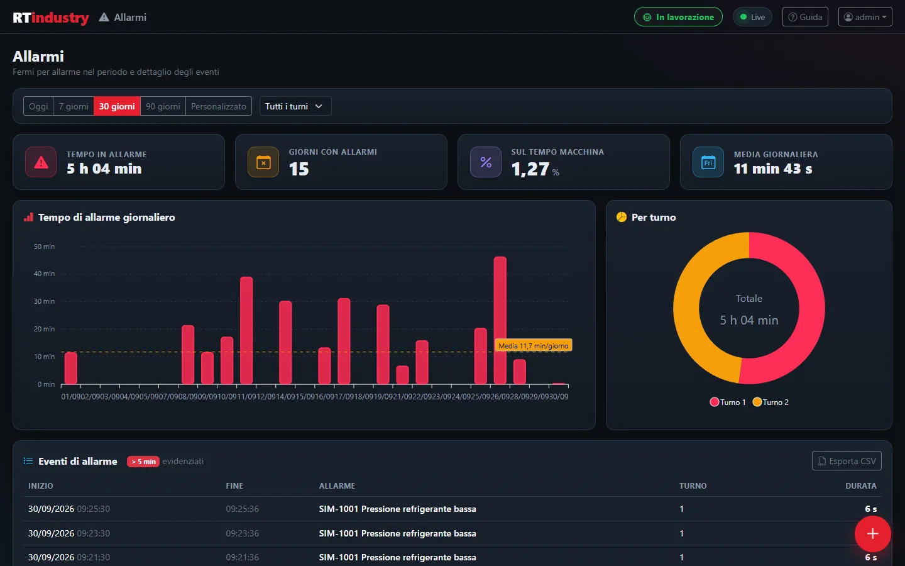
Quanto tempo in allarme, e per quali cause
Ogni allarme viene registrato con inizio, fine e durata. Gli avvisi istantanei (sotto i 5 secondi) non sporcano le statistiche.
- Tempo in allarme, giorni con allarmi, percentuale sul tempo macchina
- Grafico giornaliero con la linea della media e ripartizione per turno
- Tabella degli eventi con gli allarmi oltre 5 minuti in evidenza
- Esportazione CSV
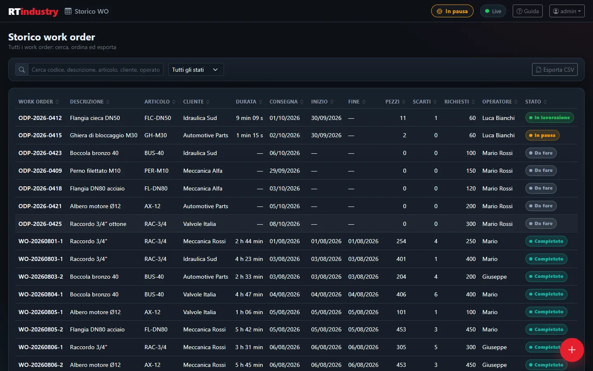
L'archivio completo delle commesse
Tutti i work order, anche quelli vecchi, con pezzi, scarti, tempi e consumi di ciascuno.
- Ricerca per codice, descrizione, cliente, articolo
- Filtro per stato e ordinamento su ogni colonna
- Esportazione CSV dell'elenco che stai vedendo
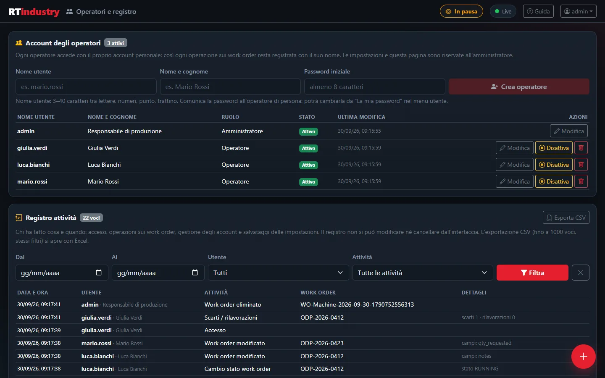
Ognuno con il suo account, ogni operazione tracciata
Ogni operatore entra con il proprio nome utente e la propria password. Il registro attività conserva chi ha fatto cosa e quando: utile per la tracciabilità della produzione e come documentazione per la certificazione del macchinario.
- Ruoli Operatore e Amministratore (solo l'amministratore vede le Impostazioni)
- Account da creare, modificare, disattivare o eliminare: le attività restano nel registro
- Registro di accessi (anche quelli rifiutati), work order, scarti, account e impostazioni
- Filtri per periodo, utente e attività, esportazione CSV
- Il registro non si modifica e non si cancella dall'interfaccia
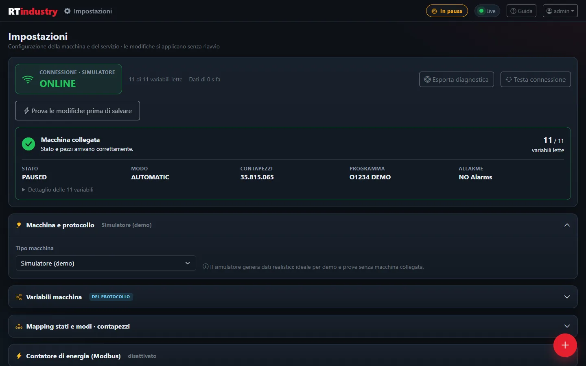
Tutta la configurazione, riservata all'amministratore
Le modifiche si applicano subito, senza riavviare nulla. Un nuovo indirizzo o protocollo si prova prima di salvarlo, senza toccare il collegamento in uso.
- Stato della connessione in tempo reale e pulsante Testa connessione
- Macchina e protocollo, variabili, mapping di stati e contapezzi
- Contatore di energia, turni, dati dell'azienda, backup, licenza e proxy
- Integrazione work order con ERP e MES, cartelle e invio programmi Heidenhain
- Esporta diagnostica per l'assistenza, senza password
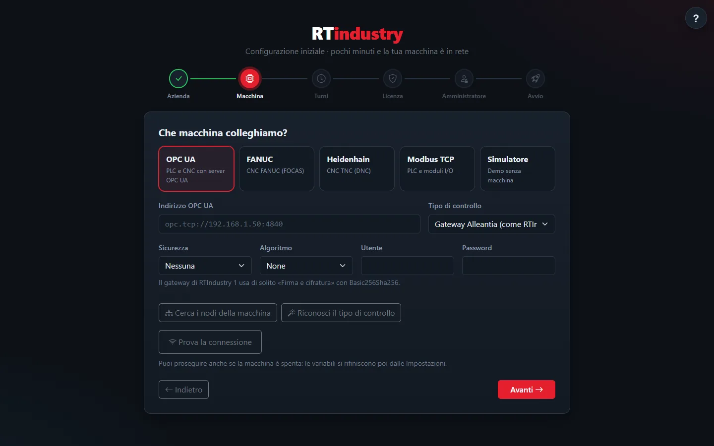
Pronto in sei passi
Subito dopo l'installazione una procedura guidata prepara tutto: se si chiude il browser a metà, riprende dal passo a cui si era arrivati.
- Azienda: nome, stabilimento, reparto, macchina e fuso orario
- Macchina: protocollo, indirizzo e Prova la connessione
- Turni, anche di notte
- Licenza (o prova gratuita di 30 giorni), con proxy aziendale se serve
- Amministratore e avvio
Nato per il reparto, non solo per l'ufficio
L'interfaccia si adatta allo schermo: dal monitor dell'ufficio al tablet fissato vicino alla macchina, fino al telefono del capo reparto. Si apre da qualunque dispositivo della rete aziendale.
- Modalità tablet con tasti grandi, adatti anche ai guanti
- Testo grande, leggibile a distanza
- Schermo sempre acceso e schermo intero, dove il dispositivo lo consente
- «Aggiungi a schermata Home»: si apre come un'app
- Guida in linea: il pulsante «?» di ogni schermata apre il manuale al punto giusto
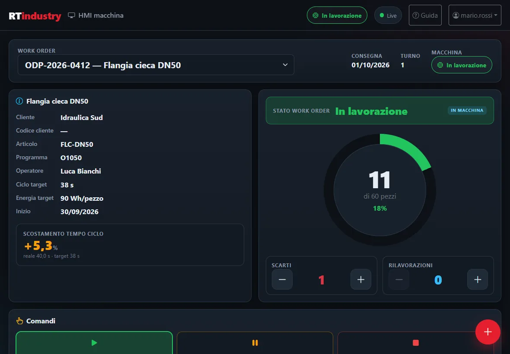
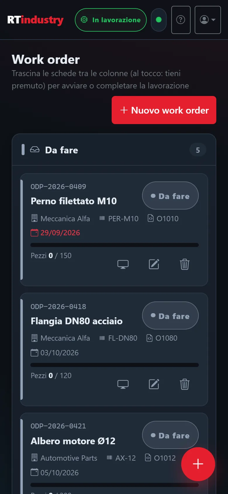
Un software, tante macchine
RTIndustry parla direttamente con il controllo della macchina: niente schede aggiuntive se il CNC o il PLC è già in rete.
OPC UA
PLC e CNC con server OPC UA: profili pronti per Siemens SINUMERIK 840D sl e macchine umati (OPC 40501), sicurezza con firma e cifratura.
FANUC FOCAS
CNC FANUC con Ethernet integrata (porta 8193): serie 0i-D/0i-F, 30i/31i/32i/35i, 16i/18i/21i, 15/15i.
Heidenhain DNC
TNC 640 e serie TNC 6xx, TNC 320, TNC 128, iTNC 530, CNC PILOT, MANUALplus e MillPlus. Invio dei programmi al controllo.
Modbus TCP
PLC e moduli di I/O: registri holding, input, coil e ingressi, con mappa pronta o registri personalizzati. Anche per i contatori di energia.
I work order arrivano dal gestionale
Il gestionale (ERP) o il sistema di produzione (MES) crea, modifica e avvia i work order e legge l'avanzamento. Tre canali equivalenti, con le stesse regole e un registro di ogni operazione.
API REST
JSON su HTTP con chiave dedicata: creare, leggere, modificare, cambiare stato ed eliminare i work order.
Tabella di scambio
Tabelle writewo/readwo nel database di RTIndustry o in un MySQL aziendale, compatibili con la versione 1.
MQTT
Broker integrato: telemetria in uscita, comandi sui work order solo da client autenticati, eventi a ogni variazione.
Dall'installazione alla produzione in pochi minuti
Nessun server da preparare e nessun database esterno: basta un PC Windows collegato in rete alla macchina.
Installa
L'installer crea il servizio Windows RTIndustry, che parte con il PC e raccoglie i dati anche a browser chiuso. Database e backup giornalieri sono inclusi.
Configura
La configurazione guidata chiede azienda, macchina, turni, licenza e amministratore. «Prova la connessione» conferma che stato e pezzi arrivano.
Produci
Gli operatori lavorano sui work order, l'OEE si calcola da solo e il responsabile ha i numeri per decidere.
Semplice da gestire, robusto in officina
RTIndustry gira in locale sul PC dell'officina. Work order, storico e registro attività restano nel database dell'azienda.
Chi gestisce più installazioni (integratori e rivenditori) ha a disposizione il Site Manager per licenze e monitoraggio centralizzato.
Un solo servizio Windows
Windows 10/11 o Server 2019 e successivi, a 64 bit. Icona vicino all'orologio che dice subito se è tutto a posto.
Licenza verificata online
Se la connessione manca, RTIndustry continua a lavorare e riprova da solo. Supporto per il proxy aziendale.
Backup automatici
Copia giornaliera del database, con backup anche prima di ogni aggiornamento.
Accessi personali
Account per ogni operatore, ruoli separati e registro delle operazioni.
Diagnostica pronta
Un clic esporta versione, stato e ultimi messaggi per l'assistenza, senza password. Uno strumento verifica PC, rete e macchina prima dell'installazione.
Guida in linea
Il manuale d'uso è incluso nel programma e funziona anche senza internet.
Protocolli macchina
Passi di configurazione
Canali di integrazione
Giorni di prova gratuita
Le risposte in breve
Che cos'è RTIndustry?
RTIndustry è un software italiano per il monitoraggio in tempo reale delle macchine CNC e dei PLC. Legge dalla macchina stato, contapezzi, allarmi e consumi, calcola l'OEE e organizza la produzione in work order. Si installa come servizio Windows e si usa dal browser su PC, tablet e telefono.
Con quali macchine funziona?
Con CNC e PLC raggiungibili in rete tramite OPC UA (per esempio Siemens SINUMERIK 840D sl o macchine umati), FANUC FOCAS via Ethernet, Heidenhain DNC (TNC 640, TNC 320, iTNC 530 e altri) e Modbus TCP. Un contatore di energia Modbus può essere collegato a parte.
Serve un server o un database esterno?
No. RTIndustry 2.0 è un unico servizio Windows con database integrato e backup automatici giornalieri: basta un PC Windows a 64 bit collegato in rete alla macchina.
Come si calcola l'OEE?
L'OEE è il prodotto di disponibilità, efficienza e qualità. RTIndustry lo calcola da solo: tempo in lavorazione rispetto al tempo disponibile, pezzi prodotti rispetto al tempo ciclo target del work order e pezzi buoni rispetto ai pezzi totali.
Si integra con il gestionale ERP o con un MES?
Sì, con tre canali equivalenti: API REST con chiave, tabella di scambio su database compatibile con la versione 1 e MQTT tramite il broker integrato. Dettagli nella guida all'integrazione.
Funziona anche senza connessione a internet?
Sì. La licenza si verifica online, ma se la connessione manca RTIndustry continua a raccogliere i dati e riprova da solo. Se l'azienda esce su internet tramite proxy, lo si indica nelle impostazioni.
Si può provare?
Sì: senza chiave di licenza parte una prova gratuita di 30 giorni. Per una dimostrazione sulla tua macchina scrivi a demo@rtindustry.it.
Pronto a digitalizzare la tua officina?
Richiedi una demo gratuita: ti mostriamo RTIndustry in azione sulla tua macchina, con i tuoi dati.
Richiedi una demoDemo e informazioni: demo@rtindustry.it · Assistenza clienti: assistenza@rtindustry.it